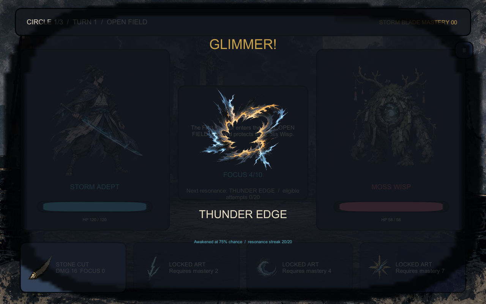

UNITY 2D
戰鬥垂直切片
角色、敵人、技能、背景與覺醒特效統一為手繪墨線與霧面厚塗，保留清楚的戰鬥辨識度。
STORM INK CHRONICLE
以手繪墨線、霧面水粉與和紙肌理，讓 Unity 戰鬥原型與 Three.js 3D 工具共用同一套視覺語言。

FIRST LOOK
UNITY 2D
角色、敵人、技能、背景與覺醒特效統一為手繪墨線與霧面厚塗，保留清楚的戰鬥辨識度。
THREE.JS 3D
三階色塊、墨線輪廓與乾筆磨痕組成 3D 手繪感，支援旋轉、關節控制與 GLB 匯出。
ART SYSTEM
靛藍、米紙、雷青、鈍朱、舊金與苔綠共用色票，介面與素材遵循相同筆觸及明度規則。
VISUAL SYSTEM
顯示全部 6 項成果
單位：公尺
上軸：+Y
前方：+Z
SHARED LANGUAGE
VERIFIED OUTPUT
資料、流程與素材契約全部通過。
標題、三圈戰鬥、結算與存檔重載流程通過。
高解析度、16:9 背景、音訊與 Windows 建置通過。
720p 與 800p 皆為可見畫面，Player error 為 0。
語意節點、面數、材質與關節契約通過。
桌機與緊湊版面、控制與 GLB 匯出通過。
此頁公開展示原創成果、3D Web 工具與驗證數據；沒有使用參考作品的商標、角色、故事、音樂或素材。
Unity 戰鬥垂直切片可由 WebGL 試玩頁直接遊玩；Windows 版仍保留為專案內測產物。3D GLB 是通用交換版，Web 專用墨線效果不會寫入 glTF。